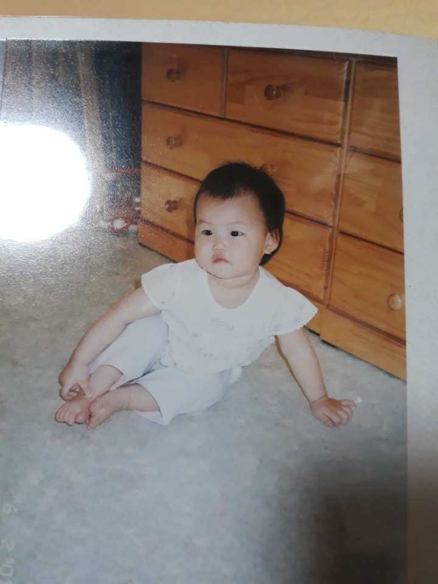

(이 사진은 대략 애기 때의 나)
4.4kg의 초 우량아로 태어났다. 사진보니까 배가 풍선배다. 콕 찌르면 터질 것 같은 뚱뚱함ㅎㅎ 그래도 점점 젖살이 빠져서 얼추 귀여운(?) 평범한 아이로 변했다.(사진처럼)
성격은 고집불통. 이 성격은 지금까지 그렇지만 엄마 옆자리를 겁나 탐냈다고 한다. 언니가 엄마옆에 누워있으면 맨날 소리지르면서 끼어들었다고.. 지금은 그러라고 해도 안 한다.
어린이집 : 서울 마포구 대흥어린이집
내 기억이 맞다면 6살부터 어린이집에 다녔는데 사실 너무 어릴 때라 생각이 잘 안난다. 그래도 기억 한켠에 남아있는 에피소드가 있는데 일명 '순수했던 배희경의 연필사랑'이다. 어느 날, 어린이집에서 받아쓰기 100점을 받은 친구들에게 연필 끝에 텔레비전 모양의 연필깎이가 있는 걸 주신다고 하셨는데 나는 캐나다를 케나다라고 써서 90점을 받았다.(ㅋㅋㅋㅋㅋㅋ 이건 왜 기억날까?) 그때 그 연필이 왜 그렇게 갖고 싶었는지 모르겠지만 선생님께서 오늘 하루 말 잘 듣는 아이한테 그 연필을 선물로 주신다고 하셨나? 그래서 겁나 초롱초롱하게 말 잘들었는데 집에 갈 시간이 다 될 때까지 안주셔서 우울한 표정으로 문을 나서는 도중 선생님께서 딱 부르시더니 초록색 연필을 주시는 것..! 그때 겁나 행복해했다. ㅋㅋㅋㅋㅋㅋㅋ 아 겁나 순수했어
어린이집에서 기억나는 친구들이 몇 명 있는데 조은서, 노경현, 변자민, 신재민, 유종호, 김재호, 윤권(성이 기억이 안남) 등.. 여기서 지금까지 연락하는 애는 단 한명도 없긴 하지만 그래도 저 친구들이랑 많이 놀아서 이름이 기억에 남나보다ㅎㅎ.. 은서랑 경현이는 중학교 때까지도 연락을 계속했고 한때 베프라고 생각했던 친구들이라서 기억에 남는다.
그리고 어린이집에 태권도 수업이 있었는데 관장님이 너무 좋았다. 그래서 이후로 쭉 김대수 관장님께서 운영하시는 태권도학원에 다녔다. 바로 삼성아이태권도!(지금은 찾아보니까 국가대표 효 태권도로 이름이 바뀌었다)
초등학교 : 서울 신석초등학교
1학년 부터 쭉 주산을 했다. 답 베껴쓴 적도 있고 나중엔 너무 하기 싫어져서 대충하고 그랬는데, 그래도 나름 친구들 사이에선 잘하는 편이었고 높은 급수였다. 그렇다고 수학을 잘하게 된 건 아니지만 이 덕에 암산은 조금 빠른 편.
우리학교에는 수영장이 있어서 수영도 다녔는데 나의 희미한 기억을 되살리면 중급반을 제일 좋아했던 것 같다. 이유는 수영쌤이 재밌어서?
아! 3학년 때 배한범이 태어났다. (이 자식아 내가 너 어릴 때 업어키웠어!!!) 그리고 3학년 쯤부터 학교가 대공사에 들어갔다. 그래서 구학교, 컨테이너 학교, 신학교 다 겪었다(Latte is a horse 운동장이 컨테이너 박스로 가득 차 있던 때가 있었다 이 말이야)
초등학교 기억은 배희경's 1n년에서 계속~